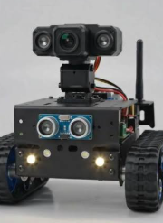
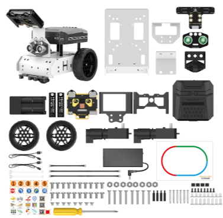
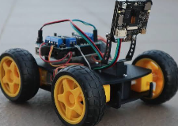
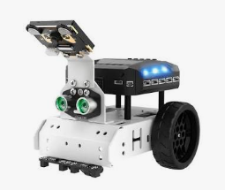

Hand Detection
Detect a hand using a webcam and MediaPipe hand landmark detection.
VJAYA ROBOTICS PROJECT
AI VISION ROBOTICS PROJECTControl a robotic car using hand gestures. This project combines Python, OpenCV, MediaPipe, Arduino UNO and HC-05 Bluetooth communication to recognize hand movements and control robot movement wirelessly.
Explore ProjectPROJECT OVERVIEW
The AI Vision Robot Car is a hand gesture-controlled robotic vehicle. A computer webcam captures the user's hand movements, while Python processes the video using OpenCV and MediaPipe.
MediaPipe detects hand landmarks and the vision module counts the number of upright fingers. The Python control program converts the detected finger count into a robot movement command.
The command is transmitted wirelessly through an HC-05 Bluetooth module. Arduino UNO receives the command and controls an L298N motor driver to move the robot car.




WHAT IT CAN DO
Detect a hand using a webcam and MediaPipe hand landmark detection.
Count four upright fingers using detected hand landmarks.
Convert finger counts into forward, backward, left, right and stop actions.
Send movement commands from Python to Arduino UNO using HC-05 Bluetooth.
Confirm a gesture over multiple frames before executing the movement.
Stop the motors when no hand is detected or when the Arduino receives no command within the configured timeout.
HARDWARE REQUIREMENTS
HARDWARE CONNECTIONS
| Arduino UNO | L298N |
|---|---|
| D8 | IN1 |
| D9 | IN2 |
| D10 | IN3 |
| D11 | IN4 |
| Arduino UNO | HC-05 |
|---|---|
| D2 (SoftwareSerial RX) | TX |
| D3 (SoftwareSerial TX) | RX |
| 5V | VCC (check module breakout specifications) |
| GND | GND |
SOFTWARE REQUIREMENTS
Install the required Python libraries using:
py -3.11 -m pip install pyserial opencv-python mediapipe numpyHOW IT WORKS
HAND GESTURE CONTROL
The Python program uses the number of upright fingers to select a robot movement.
| Upright Fingers | Action | Bluetooth Command |
|---|---|---|
| 0 | Stop | S |
| 1 | Forward | F |
| 2 | Backward | B |
| 3 | Left | L |
| 4 | Right | R |
| No hand detected | Immediate stop | S |
WIRELESS COMMUNICATION
Python communicates with the Arduino UNO using the HC-05 Bluetooth serial connection. The connection uses a baud rate of 9600.
| Character | Arduino Function | Action |
|---|---|---|
| F | moveForward() | Move forward |
| B | moveBackward() | Move backward |
| L | turnLeft() | Turn left |
| R | turnRight() | Turn right |
| S | stopMotors() | Stop motors |
PYTHON PROGRAM STRUCTURE
Starts the camera, detects gestures, maps gestures to movement functions and manages robot operation.
Stores Bluetooth COM port, baud rate and camera settings.
Uses MediaPipe Tasks to detect hand landmarks and count upright fingers.
Provides forward, backward, left, right and stop functions.
Establishes the serial Bluetooth connection and transmits commands.
MediaPipe hand landmark model required by the vision module.
ARDUINO PROGRAMMING
Initializes the motor and Bluetooth modules and continuously processes Bluetooth commands.
Defines motor pins, Bluetooth pins and the 1500 ms motor safety timeout.
Declares the motor initialization, movement and stop functions.
Implements the L298N motor control functions.
Declares Bluetooth initialization and command processing functions.
Receives HC-05 serial commands, selects motor actions and performs the automatic safety stop.
ROBOT SAFETY
The Arduino firmware includes a motor timeout system. It records the time of the last received Bluetooth command.
If no new command is received for more than 1500 milliseconds, the Arduino automatically stops both motors.
PROGRAMMING
Download the Python and Arduino files for the AI Vision Robot Car.
main.py
Download Code ↓ 🐍config.py
Download Code ↓ 🐍vision.py
Download Code ↓ 🐍robot_control.py
Download Code ↓ 🐍bluetooth_link.py
Download Code ↓ 📄requirements.txt
Download File ↓ 🧠hand_landmarker.task
Download Model ↓AI_Vision_Robot_car.ino
Download Code ↓ 📄config.h
Download File ↓ 📄motor.h
Download File ↓ 📄motor.cpp
Download Code ↓ 📄bluetooth.h
Download File ↓ 📄bluetooth.cpp
Download Code ↓PROJECT DEMONSTRATION
AI Vision Robot Car Demonstration
Your actual robot car photograph or demonstration video will appear here.IMPORTANT INFORMATION